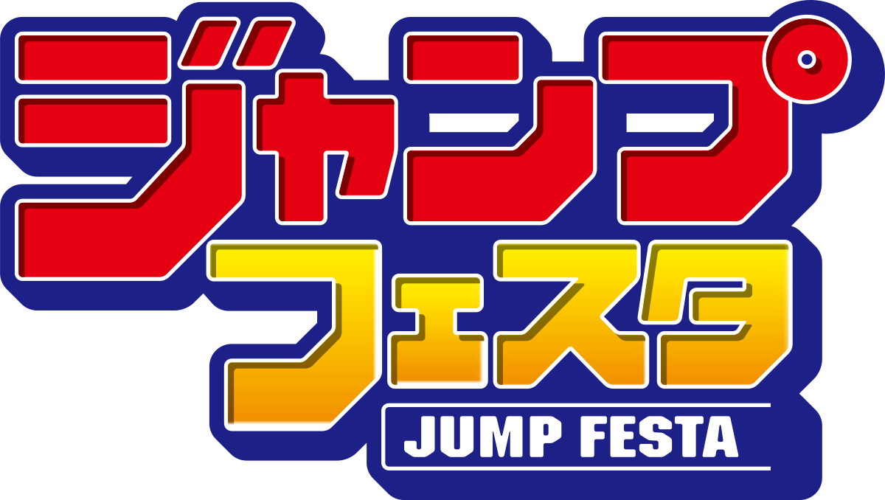
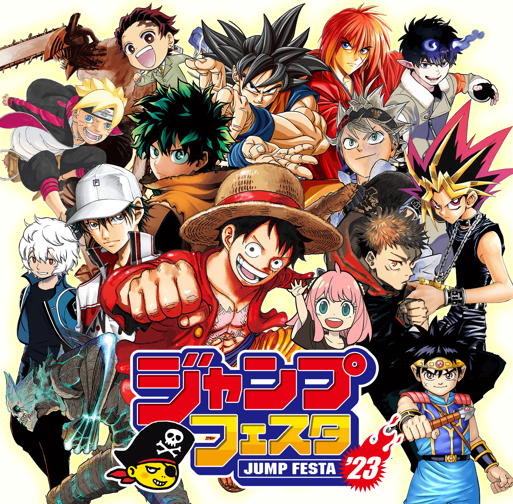

Jump Festa เป็นงานแฟนมีตติ้งมังงะและอนิเมะประจำปีที่กรุงโตเกียว ประเทศญี่ปุ่น
จัดโดย Shueisha ผู้จัดพิมพ์ Jump ต่างๆ ได้แก่ Weekly Shōnen Jump, Jump Square, V Jump, Saikyō Jump และ Shōnen Jump+
นิทรรศการนี้เริ่มขึ้นในปี 1999 และจัดขึ้นเป็นเวลาสองวันในเดือนธันวาคม โดยมีผู้เข้าร่วมมากกว่า 100,000 คนทุกปี
มีการแนะนำมังงะ อนิเมะ ภาพยนตร์ เกม และสินค้าใหม่ในช่วงกิจกรรมนี้ นักวาดมังงะจากซีรีส์ Jump ยอดนิยมทั้งในปัจจุบันและในอดีตมักจะอยู่ในมือ และหลายคนมีแผงควบคุมสำหรับตอบคำถาม